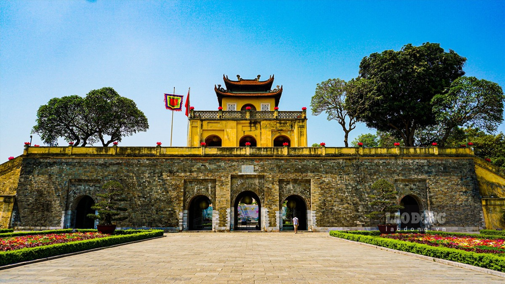
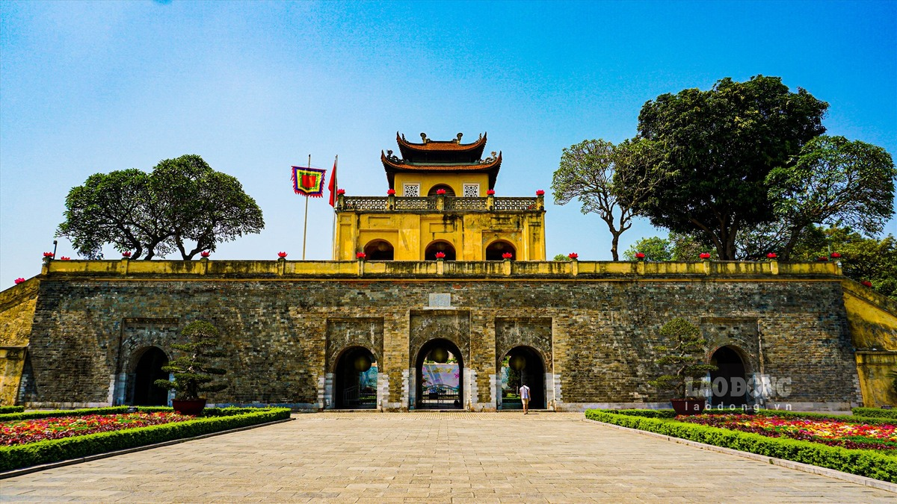
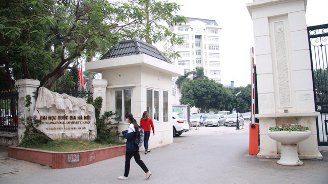
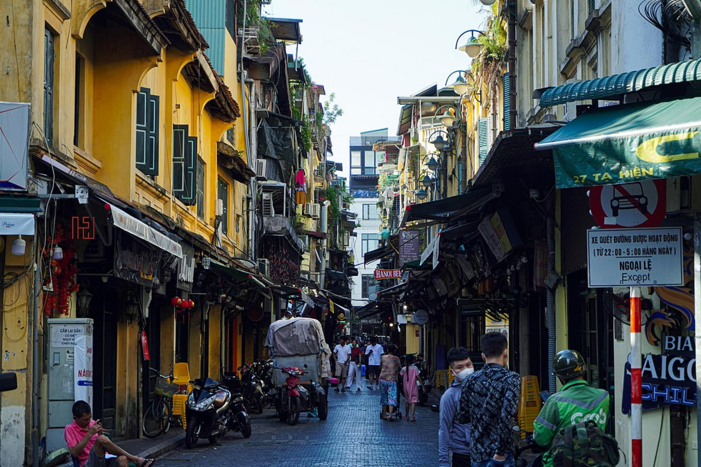
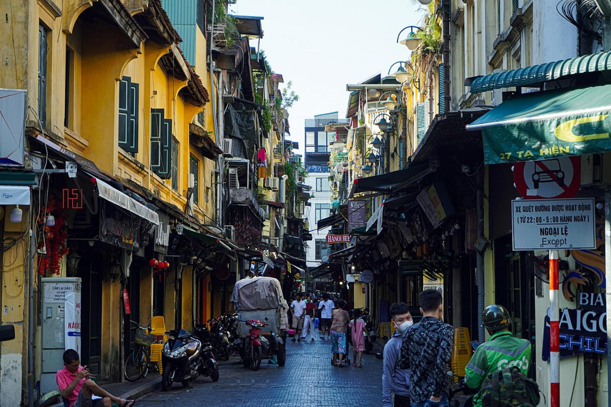

Giới thiệu về Hà Nội
Hà Nội là thủ đô của nước Cộng hòa Xã hội Chủ nghĩa Việt Nam, nằm ở bờ nam sông Hồng. Thành phố được biết đến với lịch sử hàng nghìn năm, là nơi tập trung nhiều giá trị văn hóa, lịch sử và giáo dục.
Vị trí & Dân số
Hà Nội rộng khoảng 3.358 km² và có dân số hơn 8 triệu người (2025). Là trung tâm hành chính – chính trị, Hà Nội còn là điểm kết nối giao thông quan trọng của khu vực phía Bắc và cả nước.
Di sản & Văn hóa
Hà Nội lưu giữ hàng nghìn di tích, đền chùa, đình đền và khu phố cổ. Văn Miếu - Quốc Tử Giám và Hoàng thành Thăng Long là những điểm tiêu biểu, trong đó Hoàng thành Thăng Long đã được UNESCO công nhận là Di sản thế giới.
 

Kinh tế – Giáo dục – Du lịch
Hà Nội là trung tâm tài chính và giáo dục của miền Bắc: nhiều trường đại học uy tín (ĐH Quốc gia, ĐH Bách khoa, ĐH Kinh tế…), hệ thống bệnh viện lớn, khu công nghiệp, khu hành chính và nhiều sự kiện văn hóa quốc tế.
Giao thoa truyền thống và hiện đại
Du khách dễ dàng bắt gặp sự hòa quyện giữa kiến trúc Pháp cổ, nhà cổ 36 phố phường và các tòa nhà văn phòng, trung tâm thương mại hiện đại. Hà Nội còn phát triển mạnh mẽ không gian sáng tạo: coworking, quán cà phê, nghệ thuật.
 
